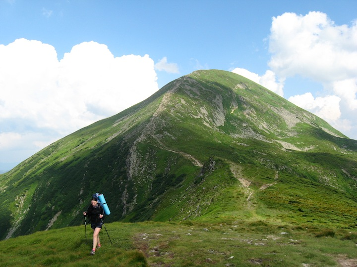
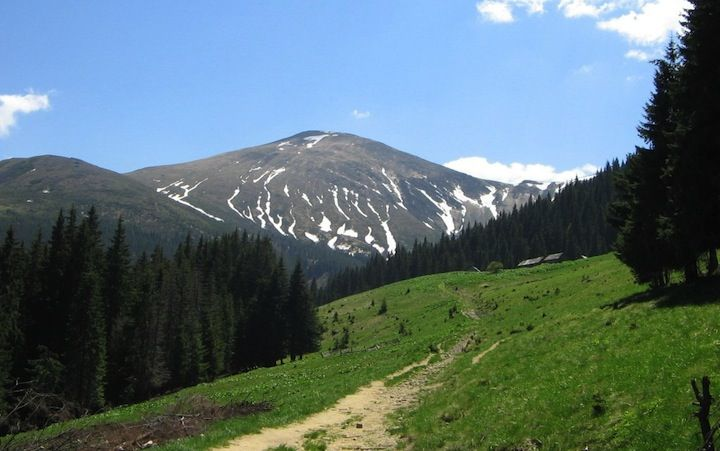
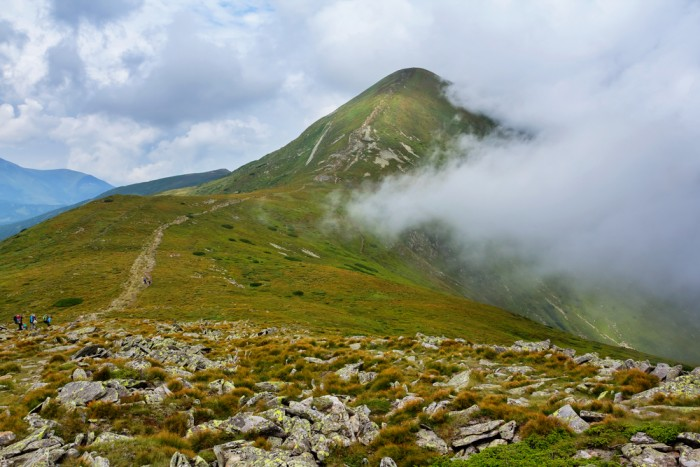

Говерла є найвищою горою і найвищою точкою на території України, її висота становить 2061 метр. Гора розташована на хребті Чорногора в Карпатах, на межі Закарпатської та Івано-Франківської областей, у 17 кілометрах від кордону з Румунією. Мало хто знає, але настільки звична для нас назва цієї гори - Говерла - походить від румунської мови і означає "важкопрохідне підвищення". Виходить, що з точки зору румунів, які дали назву найвищій горі України, це і не гора, а всього лише узвишшя. А ось в перекладі з угорської назва вершини означає "Снігова гора" (Hóvár). І це недарма, адже вершина Говерли більшу частину часу в снігу, причому дуже часто він лежить там навіть посеред літа.
Гора має правильну конусоподібну форму, в основному вона вкрита альпійськими луками й чагарниками, подекуди зустрічаються кам'яні осипи. Біля підніжжя гори знаходиться один з витоків Пруту, а недалеко від нього - мальовничий каскад водоспадів, загальна висота якого становить близько 80 метрів.
За однією з них, колись вони були хлопцем і дівчиною, кохали один одного, поки не дізнався про це Грізний Мольфар, батько дівчини. Для того, щоб Прут не знайшов Говерлу, батько сховав її, перетворивши на гору. Але Прут дізнався, щоб звільнити кохану, треба зійти на вершину гори на світанку. Але не встиг до світанку, сів на схилі Говерли і заплакав. Та так і плаче досі річка Прут, яка випливає зі схилів Говерли. Відтоді Говерла і Прут завжди разом.
Якось угорський барон Янош Нодь довідався, що ніхто з мадярів ще не побував на найвищій, тоді ще безіменній горі в Карпатах. Він і надумав собі першим вийти на вершину і назвати її своїм ім'ям. Взяв із собою двадцятеро дужих слуг на конях, кожен зі слуг взяв ще коня, навантаженого харчами та спорядженням, — і рушили в дорогу. То було якраз серед літа. Вся Угорщина знала про похід Нодя, який мав принести славу не тільки підкорювачу вершини, але й державі, а про те, що на цій вершині не раз побували прості селяни, ніхто й не згадував. Аж через два місяці доїхав Янош Нодь до невеликого карпатського села, що загубилося в горах, і здивувався. Чи справді на ту гору так важко вийти? Та ж до її вершини рукою подати. Літнє сонце нестерпно пекло. Але йти було приємно. Хвойні праліси охолоджували людей і коней. Ще два дні йшли до підніжжя гори. Там барон зупинився і наказав отаборитись, щоб відпочити, відновити сили. Два дні люди відпочивали. Залишивши трьох чоловік та коней у таборі, барон з рештою ще на світанку вирушив на гору. Небо було чисте-чисте, жодної хмарини. Довго йшли, в декого і взуття розбилося. Продирались крізь густі хащі, дибали через колюче каміння, перелізали через товсті колоди, повалені бурею. Знемагали, падали. Гордого пана це почало дратувати. Одного слугу, що хотів вертатися назад, пан спересердя пристрелив. Уже вечоріло, коли змучені люди вийшли з лісу. Перед ними простяглася широка полонина, яка ніби сягала неба. Не відчував утоми тільки Нодь. Побачивши перед собою за кількасот метрів вершину, він аж летів до неї, щоб тільки першим стати над Карпатами.
Ніхто й не помітив, як небо затягнули важкі хмари. Схаменулися тільки тоді, коли посипав лапатий густий сніг. Подув холодний вітер, знялася хуртовина й завирував буран. Рятуючись від бурі, люди розбіглися хто куди. Даремно Янош Нодь зупиняв їх — його ніхто не чув. За ніч намело стільки снігу, що люди ледве тягнули ноги від замету до замету. Лише третина людей повернулася до табору. Вони були змучені, голодні, перемерзлі. Решта загинули в бурані. Не повернувся й барон Янош Нодь. — Говирло! Говирло! — змучено повторювали ті, що повернулися. Це мадярською означало, що вся вершина засипана снігом. Такого дива люди, які прийшли сюди з далекої мадярської рівнини, ще не бачили: щоб серед літа та й сніг. Відтоді й гора названа Говерлою — сніжною горою. А вона й справді сніжна. Великі купи снігу і влітку лежать в западинах, урвищах. Та й погода тут часто міняється: сніг на Говерлі серед літа — не дивина.
На радість туристів, вершина Говерли для тих, хто вилізли сюди, є дуже зручною, оскільки являє собою невеликий плаский майданчик, а красу краєвидів, що відкриваються з неї на всі 360 градусів навколо, словами передати неможливо. Вершина Говерли вкрита альпійськими травами, на ній стоїть флагшток з прапором, тризуб, а також хрест. Також на Говерлі стоїть обеліск висотою в кілька метрів, що позначає вищу точку кордону Польщі та Чехословаччини, що проходив тут колись. 
Не дивно, що Говерла є популярним об'єктом для туристів, щороку тисячі людей здійснюють сходження на гору. Це можна зробити з початку травня до кінця вересня, в інший час, через підвищений ризик, на гору пропустять тільки професійних альпіністів. Загалом, в гарну погоду підйом на Говерлу займає 2,5-3 години. Під час підйому будьте гранично обережні, адже, на жаль, нерідкі випадки травматизму серед туристів, які не дотримуються заходів безпеки, трапляються і смертельні випадки.